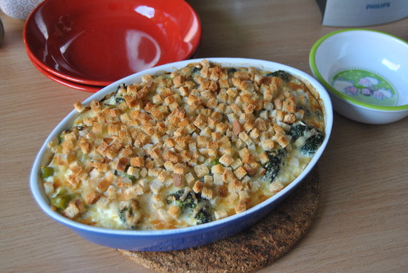

Nudelauflauf mit Brokkoli

- Zubereitung: ca. 15 Minuten
- Backen: ca. 60 Minuten
- Für 4 Portionen
Zutaten
- 400 g TK-Brokkoli
- 2 Scheiben Toastbrot vom Vortrag
- 200 g Kochsahne (15% Fett)
- 200 g Doppelrahm-Frischkäse
- 300 ml Gemüsebrühe
- 4 Eier
- 250 g Hörnchennudeln
- 100 g geriebener Gouda
Zubereitung
- Den Brokkoli kurz antauen lassen. Den Backofen auf 200° Celsius (Umluft: 180° Celsius) vorheizen.
- Toast ganz fein würfeln. Sahne, Frischkäse, Brühe und Eier verrühren, kräftig mit Salz und Pfeffer würzen.
- Rohe Nudeln und Brokkoli mischen, flach in eine ofenfeste Auflaufform schichten. Die Sahnemischung darübergießen, mit Käse bestreuen. Den Auflauf im Ofen circa 60 Minuten überbacken. 15 Minuten vor dem Ende der Backzeit die Toastwürfel über den
Auflauf streuen und mitbacken.